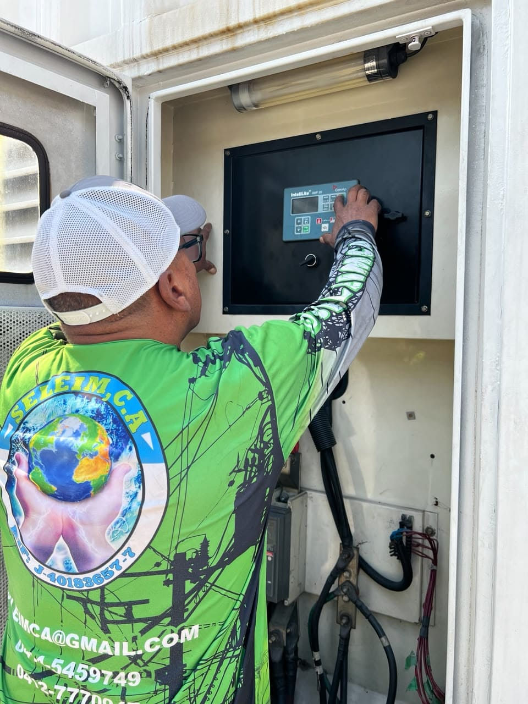
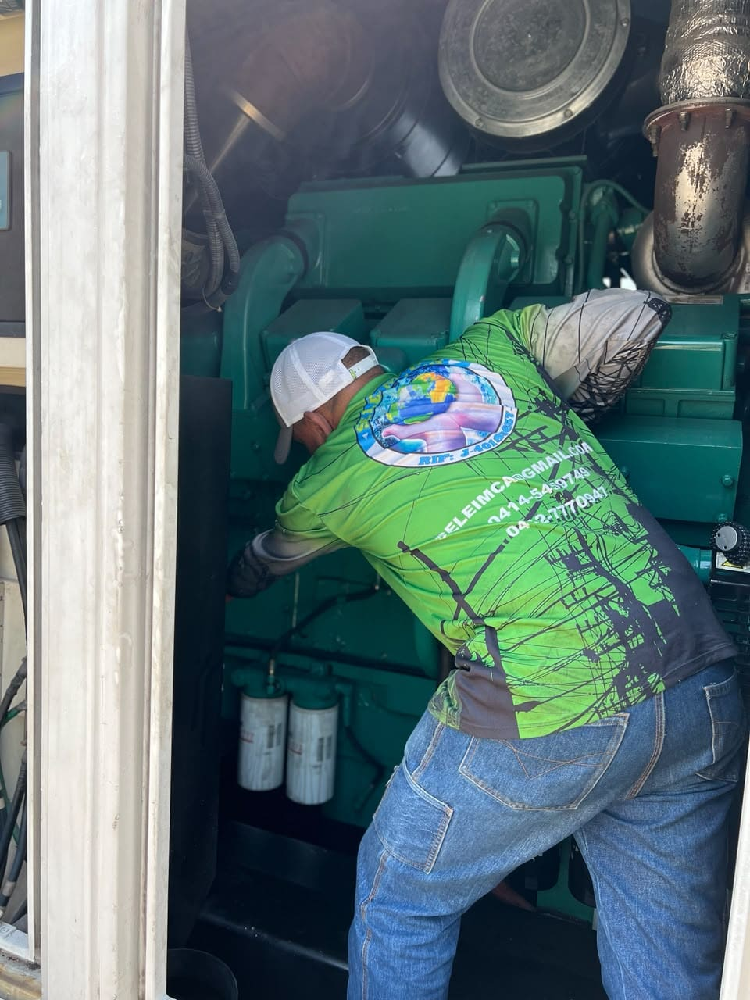
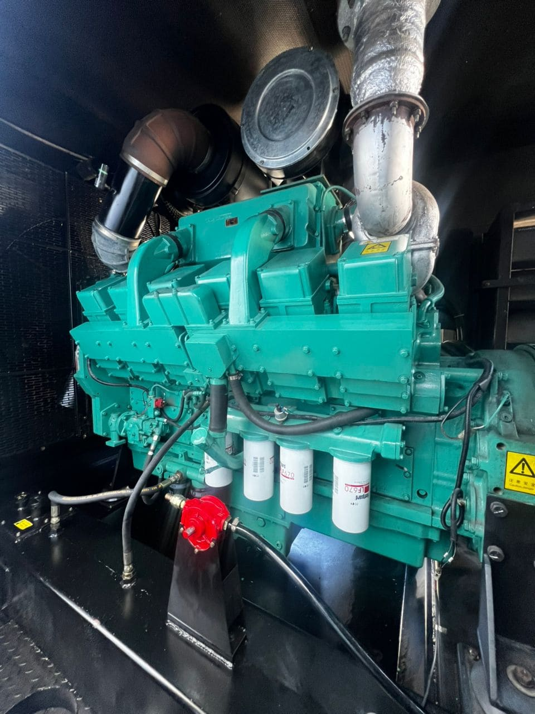

Continuidad operativa para infraestructura crítica
En SELEIM contamos con personal especializado en mantenimiento, instalación, diagnóstico, reparación y gestión integral de grupos electrógenos, sistemas UPS, bancos de baterías e infraestructura crítica de respaldo energético.
Atendemos sistemas de generación de baja y media tensión utilizados en plantas industriales, centros de distribución, edificios corporativos, telecomunicaciones e instalaciones donde la continuidad operativa es un factor fundamental.
Respuesta técnica confiable
Evaluamos el estado del sistema, documentamos hallazgos y proponemos acciones correctivas para reducir paradas no programadas.
Servicios Especializados
- Mantenimiento preventivo y correctivo de grupos electrógenos.
- Diagnóstico de fallas eléctricas y mecánicas.
- Pruebas funcionales y verificaciones operativas.
- Reparación de sistemas de excitación y regulación AVR.
- Mantenimiento de motores diésel y sistemas auxiliares.
- Instalación y configuración de sistemas de transferencia automática ATS.
- Integración de sistemas de respaldo energético.
- Inspecciones técnicas programadas.

Diagnóstico y Evaluación del Sistema
Antes de ejecutar cualquier intervención, realizamos una inspección técnica detallada para evaluar el estado operativo del motor, generador, sistema de control, transferencia, protecciones y componentes auxiliares.
Esta metodología permite identificar fallas de forma temprana, optimizar los tiempos de reparación y reducir costos asociados a paradas no programadas.

Informes Técnicos y Recomendaciones
Cada evaluación es documentada mediante informes técnicos que incluyen hallazgos, evidencias fotográficas, recomendaciones y acciones correctivas propuestas.
Esta documentación facilita el seguimiento del mantenimiento, mejora la toma de decisiones y permite planificar futuras intervenciones con mayor precisión.

¿Por qué elegir SELEIM?
Respuesta rápida
Atención oportuna para minimizar tiempos de indisponibilidad.
Personal especializado
Técnicos capacitados en sistemas de generación y respaldo energético.
Documentación técnica
Informes detallados para auditorías y gestión de mantenimiento.
Soluciones integrales
Desde la inspección inicial hasta la restitución operativa del sistema.
Solicite una evaluación técnica
Nuestro equipo está preparado para asistirle en el diagnóstico, mantenimiento y optimización de sus sistemas de respaldo energético.
Solicitar inspección